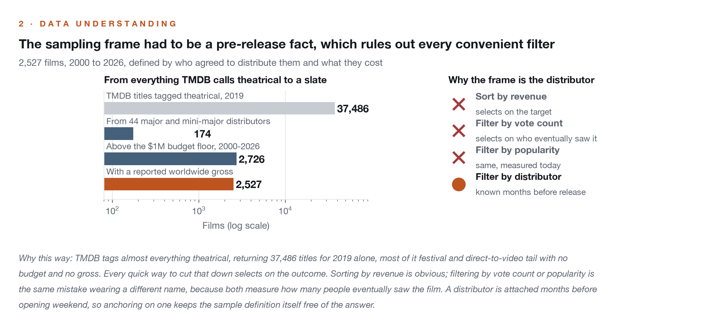
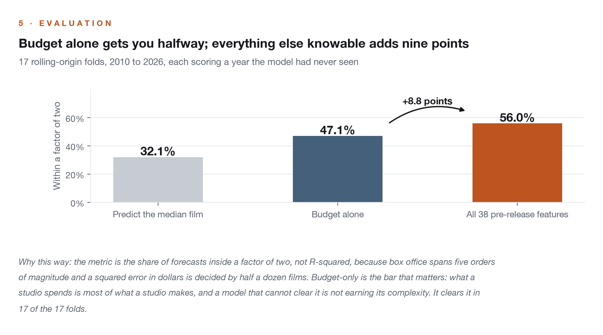
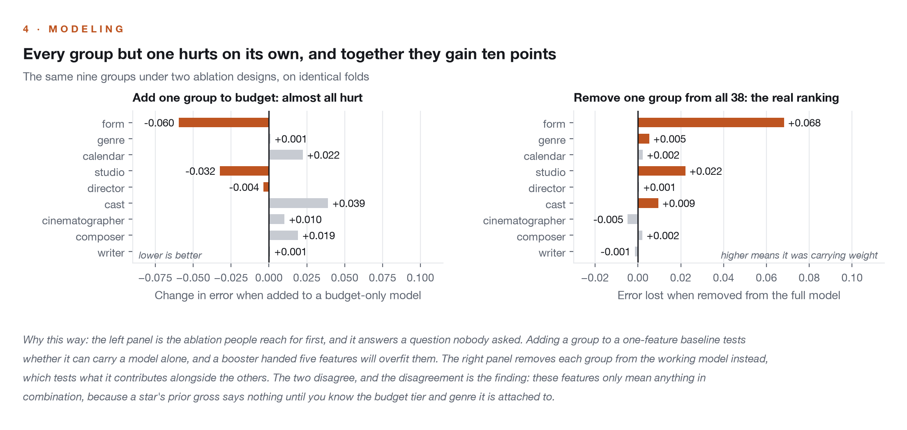
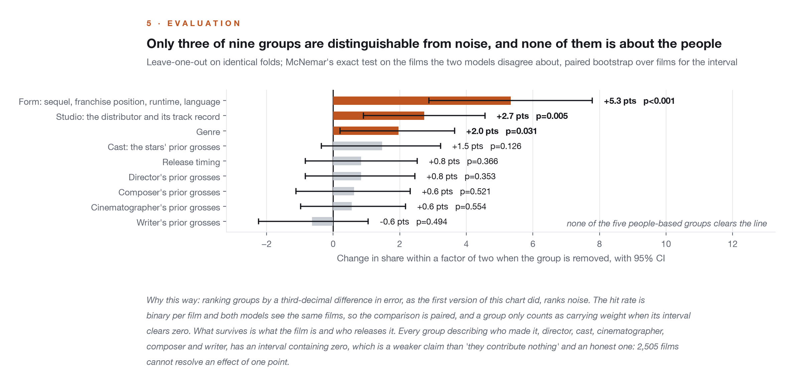
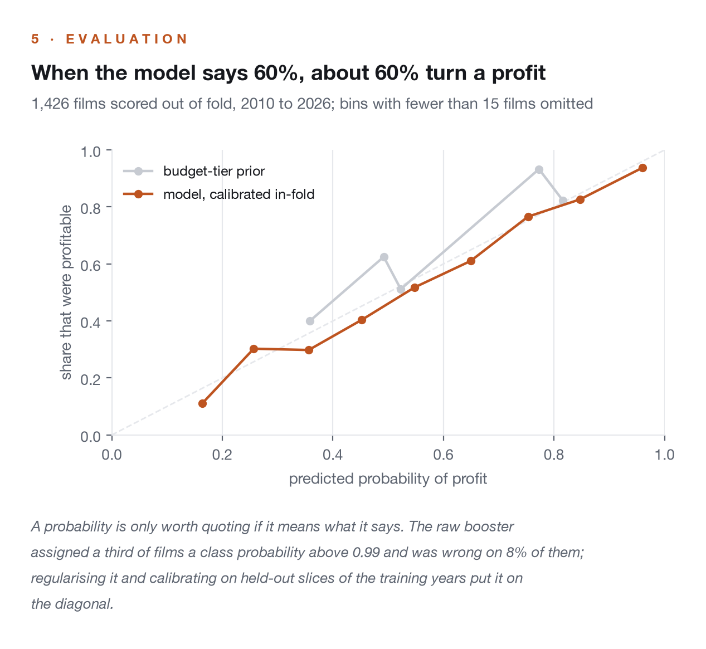
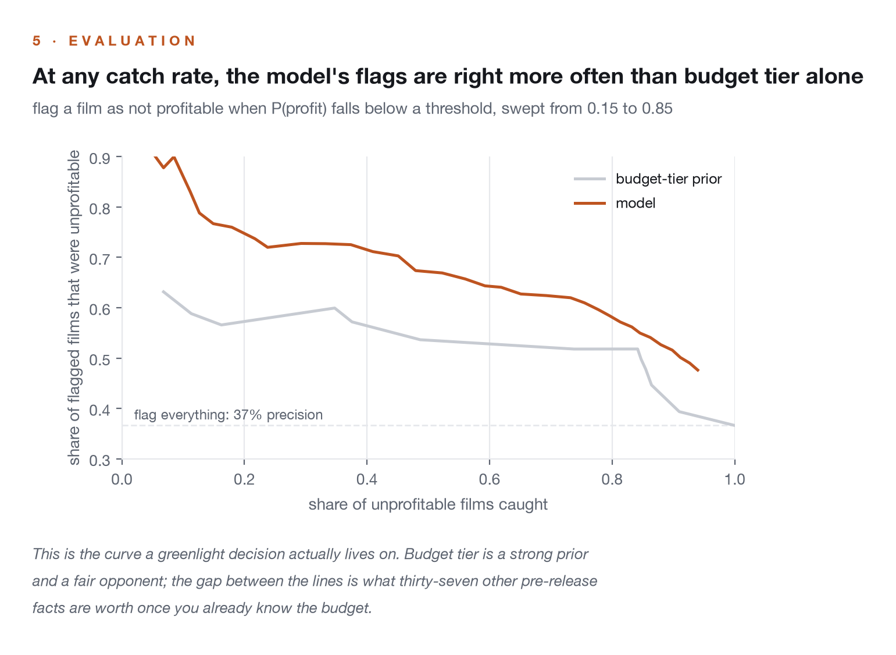

Projects/Box Office Before Release
Box Office Before Release
Can you tell which films will not pay before they open, from nothing that is not public on the day the trailer drops? Yes, within every budget tier, and the thing that predicts it is not who made the film. Five separate groups describing the director, cast, cinematographer, composer and writer all sit inside noise. Which company releases it does not.
A forecast of what a film will earn, built under one rule: every input has to be knowable on the day the marketing campaign starts. That rule is stricter than it sounds. A director's average gross is a legitimate feature, but the same average computed over their whole career includes films that had not opened yet, and the two columns have the same name. IMDb ratings, vote counts and Rotten Tomatoes all accumulate after release and are banned outright. The project started as a regression on revenue, found that budget alone explains most of it, and turned into the question a studio actually asks: which of these will not pay?
Does who makes a film predict what it earns?
Not measurably, and that was tested seven ways rather than assumed. Director, cast, cinematographer, composer and writer were each encoded as a track record as of release day, and each was removed from the working model on identical folds with a paired test on the films the two versions disagreed about. Every interval contains zero. Then the obvious objections were built and tested too: Academy pedigree, the marketing synopsis, career length and gaps, and a version with every person's full filmography pulled in from outside the sample. All of them lost. What survives is what the film is, a sequel at this budget from this distributor, and that is enough to rank the riskiest tier of films three to one.
A regression on box office rediscovers budget. This one did: budget alone lands 47% of forecasts within a factor of two, and thirty-seven more features add ten points. The lift is real, but the model was weakest exactly where a studio needs a warning, projecting nine times actual in the bottom decile. So the target changed. The outcome space was clustered without any pre-release variable in it, three stable kinds fell out, and the classifier predicts which kind a film becomes, scored against the base rate inside its own budget tier. Predicting that a $200m tentpole turns a profit is worth nothing when 81% of them do. Predicting which of the sub-$15m films is the 37% that works is the whole job.
Six decisions, each with the chart that settled it.






The load-bearing decision is that a feature is a function of the release date, and a test enforces it rather than a comment asking nicely.
- Why an as-of encoding instead of a career average?
- A plain
groupbygives a director's average over every film, including the ones after this one.AsOfsorts by release date and lets each row see only strictly earlier rows, and the case that makes it hard, two films opening the same morning, is tested directly: both see the history as of that day and neither sees the other. Fourteen post-release columns are banned by name and a test proves each one trips the guard. - Why does the sampling frame matter more than the model?
- Every convenient way to cut TMDB's catalogue down selects on the outcome. Revenue is the target; vote count and popularity measure who eventually saw the film. The distributor is known months out, so 42 of them define the sample and nothing about the answer leaks into who is in it.
- Why was the target corrected, and why before the features?
- Two rounds of feature work made the model worse, which usually means the label is wrong. Against an independent file whose own arithmetic checked out, TMDB understated worldwide gross on 104 of 1,909 shared films; on thirty of them the worldwide figure was exactly the domestic one. The target is also the input to every career prior, so a corrected gross had to be applied before the priors were built, not after.
- Why calibrate, and why is the opponent the budget tier?
- The library-default booster scored 69% accuracy with a log loss worse than the prior, which is what overconfidence looks like on paper. Regularised hard and calibrated by isotonic regression on held-out slices of the training years, it emits a probability that means what it says. And the opponent is each tier's own class frequencies rather than a coin, because a model that says profit to every tentpole and loss to every small film is already right 65% of the time.
- Why ship the library defaults?
- A hand-set configuration shipped for months and lost to the defaults on folds it was never chosen against. A randomised search then picked a winner on 2010 to 2018 that was the worst of three on 2019 to 2026, which is what fitting the selection looks like from outside. The least-fitted option generalised best, and it is defined once in
train.pyso six copies cannot drift apart again. - Why keep seven negative results?
- Because they are the finding. Prestige, the synopsis, career structure, widened histories, a neural net, the writer credit and the summed breakout were each a reasonable idea, built properly, scored on the same folds, and lost. Each stays in the repository as a module anyone can re-run, so the next person to propose Oscar features can see the number that already settled it.
It never calls a write-off. Fifty-nine of the 1,426 scored films are in that class and neither model nor prior ever predicts it as the most likely outcome; the model separates them three to one on probability and never past the point of a call. A class that rare on a sample this size is detectable and not predictable. Two thousand films is small, and the significance tests say so directly: a one-point effect is unresolvable at this size, which is why the people results are stated as "inside noise" rather than "zero". "Profitable" means the worldwide gross returned the production budget at a multiple the clustering found; prints and advertising, exhibitor splits and ancillary revenue are in no public dataset. And the sample is studio films, so it will not price a microbudget breakout.
Data: TMDB for the catalogue and credits, OMDb for the domestic gross, IMDb's public datasets for crew and Academy records, and an independent box office file for correcting the target. Built for portfolio demonstration; the decision log is an executed notebook in the repository, and every published number is pinned by a test against the artifact that produced it.